Materiais e itens
pendentes/ com o nome do contrato; as outras em candidatas/. Tamanhos: todos no contrato (16×16, lamp_bio 16×32, drone_t2 64×16), alpha só 0/255 e a sombra. Referência de estilo: só os ícones aprovados do próprio jogo (v0.8 e os equipamentos); nada de fora.1 · Materiais (a planta aparece no material)
Ampliados ×4 com o 1× do lado. Cada linha: a planta de origem (aprovada) → as candidatas → o ícone do jogo que pode confundir. Contorno #1b1630, faixas chapadas, um brilho, como os ícones da v0.8. Borda verde = recomendada.
Fibra sintética · da Alga
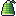
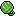
Gel hídrico · da Folha-gota
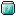
Resina de geada · da Espiral-de-geada
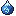
Essência de Lírio · da Lírio-de-Ilves
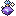
Na escala do jogo (slot 20 px, escala Grande ×2)
Alga, as 3 plantas e 2 amostras (aprovados) e, depois, os 4 materiais recomendados.
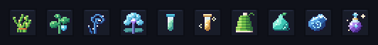
2 · Itens
Os nv.2 saem do nv.1 aprovado (mesma silhueta), com o dourado #f2c46d das máquinas nv.2 e o material de que são feitos aparecendo: fibra verde, gel verde-azulado, resina azul.
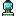
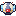
icon_drone.png de hoje ainda é o quadricóptero antigo, mas o drone.png do mundo é o drone esférico do r3d. Por isso o ícone nv.2 tem duas candidatas: A segue o ícone de hoje (recomendo, pra hotbar ficar coerente com o nv.1), B segue o drone do mundo. Se o dono quiser alinhar ícone e mundo, o certo é refazer o icon_drone também (fica pra outra rodada).Na escala do jogo
Os equipamentos de hoje (mochila, tanque, scanner, luminária, drone) e, depois, os 6 itens novos.
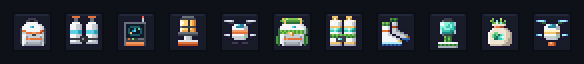
3 · No mundo
Luminária bio · lamp_bio.png 16×32


Na caverna escura (mesma escuridão e ordem de desenho da prévia da luminária forte): comum (raio 5, quente), forte (raio 7, quente) e bio (raio 5 na prévia, luz fria verde-azulada (150, 245, 215)).
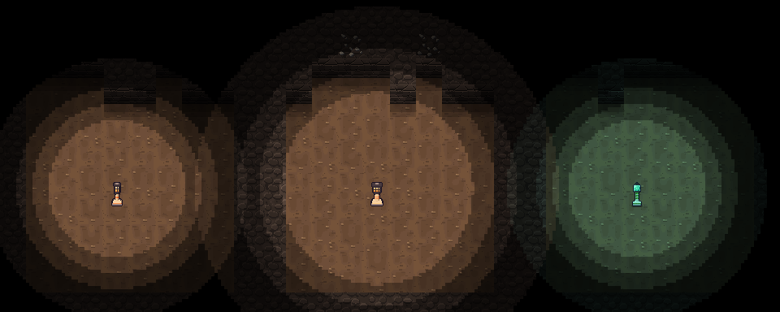
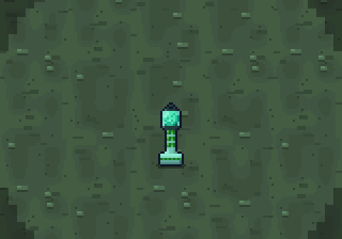
Zoom ×3 da bio acesa. Mesma cena com luz cheia, pra ver o sprite: caverna_luminarias_claro.png.

Drone nv.2 · drone_t2.png 64×16 (4 quadros de 16×16, igual ao drone.png)
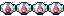
Na base (névoa)
Três luminárias bio no chão e os dois drones voando (o nv.1 perto do player, dois nv.2), em escala 1:1, mesma ordem de desenho.
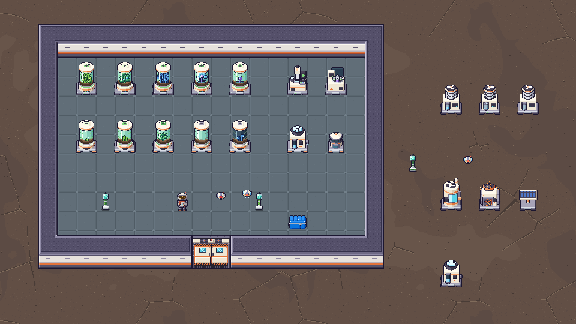
4 · Painel de equipamento (aba Tab · Inventário)
Escala Grande (tela lógica 480×270, ×2), medidas reais de game/ui.py: TAB_INV_W 346, TAB_INV_H 178, BACKPACK_ROW_H 32, grade 174, slot 20 e passo 22, detalhe do fim da grade até a borda, TRAJE em top+68. O detalhe mostra a Fibra com o "USADO EM" das receitas novas.
O TRAJE com 4 slots (vale pras duas opções)
Hoje: tanque e scanner dos lados do Explorador e a mochila embaixo do corpo. Com BOTAS os rótulos de baixo batiam nos estados de cima, então cada slot ganha um canto do cartão (rótulo e estado virados pra dentro): TANQUE e SCANNER em cima, MOCHILA e BOTAS embaixo. Mesmo cartão de 174×62, nada muda de altura. Abaixo, o Tab de hoje só com esse cartão novo (botas vazias, fantasma a 45 como os outros).
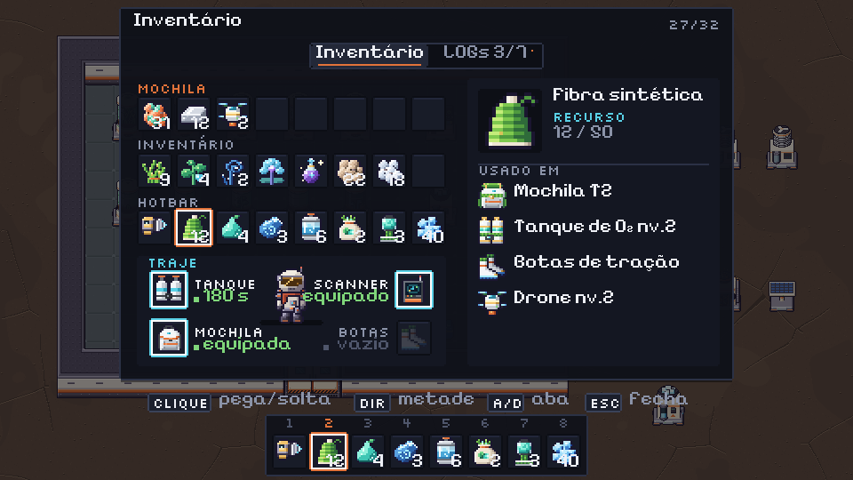
Opção B · mesma janela, as pilhas dobram
Mesma janela de hoje (346×210), Mochila T2 no slot da mochila: recurso empilha até 100 no player (hotbar, inventário e mochila; baú continua 50). Como o jogador percebe: (1) o rótulo vira MOCHILA T2 com o selo dourado PILHA 2X; (2) o estado da mochila no TRAJE diz pilha ×2 em dourado; (3) o detalhe mostra 12 / 100 com o selo 2X; (4) os números passam de 50 nos slots (o "100" ocupa o slot quase inteiro, ainda lê). Ao pegar a Mochila T2, um aviso "Pilhas dobradas: recursos até 100" fecha a conta.
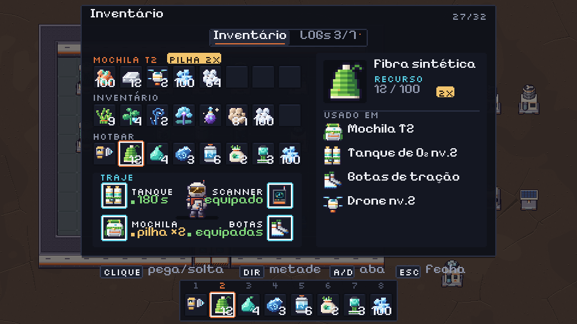
Opção A · +1 linha (2 linhas da mochila)
Sem reorganizar não cabe: 178 + 2×32 = 242 de altura; na Grande a janela já encosta no topo (y 4) e passa 32 px por cima da moldura da hotbar (vermelho).
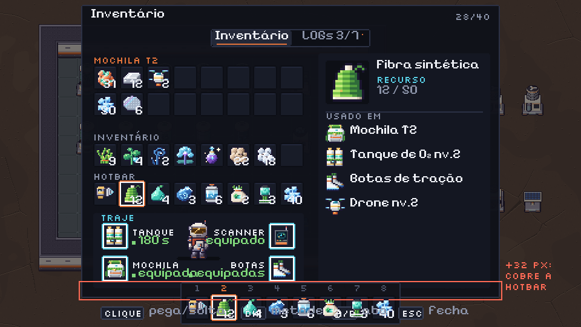
Reorganizada: 3 colunas, com o TRAJE numa coluna própria (Explorador em cima, os 4 slots em 2×2). Fica 446×174: mais larga, mas mais baixa que a de hoje (210), então sobra folga na Grande e nas outras escalas. O detalhe perde altura (3 linhas de "USADO EM" em vez de 5, o resto vira "+ N receitas" como hoje).

Nos painéis lado a lado (baú, máquinas) a janela do inventário vai de 116 pra 148 de altura. O painel do outro lado já é mais alto (baú grande ~194, cultivador 244), então nada muda de lugar:
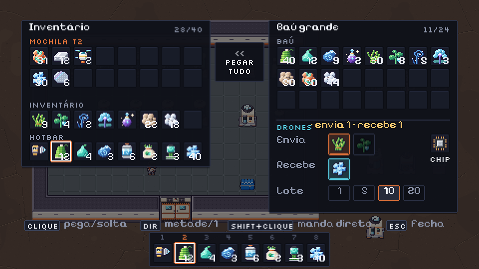
Pro Dev integrar (depois do ok do dono)
- Arquivos (de
reports/design/v08_m5_itens/pendentes/praassets/sprites/, só os escolhidos):icon_fiber,icon_hydrogel,icon_frost_resin,icon_lily_essence,icon_backpack_t2,icon_o2_tank_t2,icon_boots,icon_lamp_bio,icon_fertilizer,icon_drone_t2(16×16, ícone de item, desenhados ×2 no slot como os outros);lamp_bio.png16×32;drone_t2.png64×16. Se o dono escolher B/C de algum, o PNG está emcandidatas/<nome>_<letra>.png(renomear pro nome do contrato). - lamp_bio.png: drop-in da
lamp.png(C.LAMP_SPRITE_SIZE(16, 32) não muda): objeto de 1 tile, base na linha 29, centro x = 8, desenhada em(tx*32 + 16 - 8, (ty+1)*32 - 32), ordem de desenho pelo pé como as outras. Centro do brilho =(8, 7)do PNG; olighting.lamp()de hoje (tx*T + 16, ty*T + 8) já cai certo. Luz:LAMP_RADIUS["lamp_bio"](sugiro 5, número decide o marco) e uma cor própria fria,(150, 245, 215), em vez doLAMP_COLORquente; sem flicker (sugestão: um "respirar" lento de intensidade 0,9–1,0 em ~3 s, se for barato). Sem energia: não entra na rede. - drone_t2.png: mesmo contrato do
drone.png(C.DRONE_SPRITE16, 4 quadros lado a lado, 15 fps, mesmo balanço de flutuar e mesmo offset de desenho). Gerado pela mesma cena r3d do drone aprovado (machines_r3d.drone), só trocando cinto, aletas e propulsores. - Slot BOTAS:
EQUIP_SLOTS= ("o2_tank", "scanner", "backpack", "boots"),EQUIP_LABEL["boots"] = "BOTAS". Mochila T2 e Tanque nv.2 ocupam o mesmo slot da nv.1 (o fantasma do slot vazio continua sendo o ícone nv.1). Cartão do TRAJE (opção B / layout de hoje): 4 slots nos cantos de(gx, top+68, 174, 62): esquerdax+8, direitax+w-28, linhasy+9ey+36; rótulo emsy+2e estado (ponto 3×3 + texto) emsy+9, alinhados pra dentro (sx+24à esquerda, alinhado à direita emsx-4do lado direito). As linhas até o corpo saem. - Opção A (layout): janela
446×174(= 10 + 174 + 8 + 96 + 8 + 142 + 8; altura 40 + 4×32 − 2 + 8). Coluna 1: MOCHILA T2 (2 linhas,top+10etop+32), INVENTÁRIO emtop+64, HOTBAR emtop+96. Coluna 2 (TRAJE, 96 de largura, detopatéy+h-8): Explorador em(x+32, y+6), slots 2×2 centrados em células de 46, linhasy+44ey+84, rótulo centrado emsy+21; estado só no tanque ("180 s") e nos vazios ("vazio"). Coluna 3: o detalhe de hoje com 142 de largura. Painéis lado a lado:inv_h = SIDE_INV_H + 2×BACKPACK_ROW_H(148), o resto igual. - Opção B (pilha):
max_stackde recurso ×2 no inventário do player com a Mochila T2 equipada (baú não muda). Rótulo "MOCHILA T2" + selo dourado "PILHA 2X" (pílula#f2c46d, texto#1b1411) logo depois do rótulo; no TRAJE o estado da mochila "pilha ×2" em dourado; no detalhe o selo "2X" depois de "12 / 100". Tirar a mochila com pilha > 50: o que sobra cai no chão/não deixa tirar (regra do Dev). - Cores novas (só nos ícones): gel
#1f8a86/#3fc6b4/#8ff0dc, brilho bio#3fc6b4/#8ff0dc/#e0fff6; o resto vem das paletas aprovadas (alga, Folha-gota, Espiral-de-geada, Lírio, equipamentos, dourado nv.2). - Gerar de novo:
python3 tools/sprites/v08_m5_itens_report.py(roda ov08_m5_itens.pyantes). Determinístico. Não mexe emassets/.